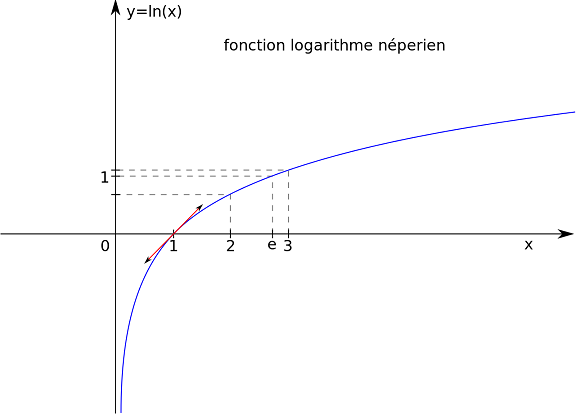

La Fonction "Logarithme Népérien"
Conseil : il faut savoir représenter la courbe de la fonction
ln
passer aux exercices

ensemble de définition : \( ] 0 ;+\infty [ \)
valeurs remarquables :
ln(1) = 0 ln(e) = 1
limites :
$$\lim_{x\rightarrow 0} \: ln(x) = -\infty $$ $$\lim_{x\rightarrow +\infty } \: ln(x) = +\infty $$
La courbe de la fonction ln admet une ASYMPOTE VERTICALE d'équation x=0 (axe des ordonnées)